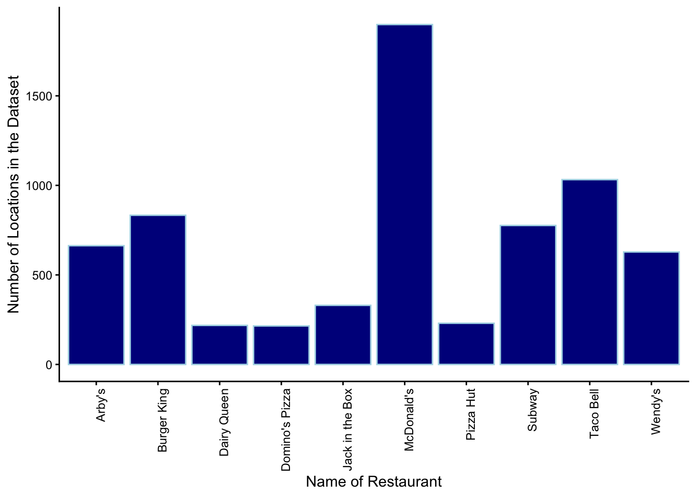
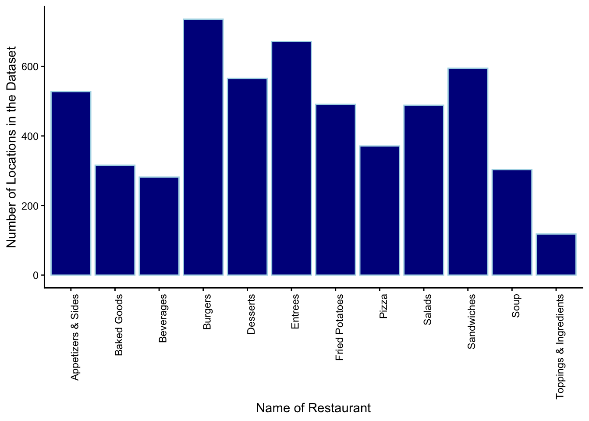

library(readr)
library(dplyr)
library(ggplot2)
library(ggmap)Final Project - Phase 1
#Loading Data sets
fast_food_locations <- read_csv("fast_food_locations.csv")
menu_stat <- read_csv("menu_items.csv") #binary variable --> 'shareable' and 'limited_time_offer'Warning: One or more parsing issues, call `problems()` on your data frame for details,
e.g.:
dat <- vroom(...)
problems(dat)Description of our data
Dataset #1(“fast_food_locations”): The first dataset was Fast Food locations which was created in 2018 and we found this dataset using Data.World. This is a list of 10,000 fast food restaurants provided by Datafiniti’s Business Database. The dataset includes the restaurant’s address, city, latitude and longitude coordinates, name, etc.. Dataset #2(“menu_stat”): We received our data from Data.World and it is owned by DataInfiniti. The MenuStat dataset was created by the City of New York in 2022. More specifically, this dataset came from NYC Open Data which is public data generated by various New York City agencies and other City organizations that is available for public use. It provides information about top national restaurant chains. Each item is coded a mutually exclusive food category and descriptive information is coded into binary variables (e.g. on the kids menu). This includes information about: menu_item_id, year, restaurant_item_name, restaurant, restaurant_id, item_name, and multiple nutritional facts. We decided to use two datasets so that we can include locations which we think are important. The datasets have overlapping restaurants so we can combine/filter the dataset according to our needs. We will have to be careful to not change the observations so as to not affect our analyses.
Description of our research question(s)
Which restaurants in each location have the best/worst nutritional content? Which locations have the best/worst nutritional content? How does the category of the food affect it’s nutritional facts? How does meat contents affect nutritional content (present or not)?
Numerical summaries and visualizations
Numerical Summary(Count of restaurants in each data set)
# we will have to filter this whole data set so that we only get the restaurants that we want to use.
fast_food_locations %>% #first three pages of restaurants here are all in the 'menu_items' data set below
group_by(name) %>%
summarize(count = n()) %>%
arrange(desc(count)) %>%
filter(count >= 42) # A tibble: 30 × 2
name count
<chr> <int>
1 McDonald's 1898
2 Taco Bell 1032
3 Burger King 833
4 Subway 776
5 Arby's 663
6 Wendy's 628
7 Jack in the Box 330
8 Pizza Hut 230
9 Dairy Queen 218
10 Domino's Pizza 215
# ℹ 20 more rows# might want to filter out the drinks, shareable items, etc.
menu_stat %>%
group_by(restaurant) %>%
summarize(count = n()) %>%
arrange(desc(count))# A tibble: 96 × 2
restaurant count
<chr> <int>
1 Starbucks 4504
2 Dunkin' Donuts 3707
3 Wawa 2685
4 Sheetz 2429
5 Sonic 1605
6 Jersey Mike's Subs 1594
7 Golden Corral 1395
8 Pizza Hut 1217
9 Papa John's 1207
10 Firehouse Subs 1156
# ℹ 86 more rowsNumerical Summary(Mean nutritional facts for each restaurant)
#We could make a healthy/non-healthy binary variable, but that's relative.
average_nutritionalFacts_ForRestaurants <- menu_stat %>% #might want to filter only the things that are not shareable, because the shareable items will probably make the averages go up because they are larger.
select(Year, restaurant, Item_Name, Restaurant_Item_Name, Food_Category, Calories, Total_Fat, Saturated_Fat, Trans_Fat, Cholesterol, Sodium, Potassium, Carbohydrates, Protein, Sugar, Limited_Time_Offer, Shareable) %>%
#CODE TO FILTER OUT NA'S
filter(!is.na(Calories), !is.na(Total_Fat), !is.na(Saturated_Fat), !is.na(Trans_Fat), !is.na(Cholesterol), !is.na(Sodium), !is.na(Carbohydrates), !is.na(Protein), !is.na(Sugar)) %>%
group_by(restaurant) %>%
summarise(cal = mean(Calories), Tfat = mean(Total_Fat), Sfat = mean(Saturated_Fat), TRfat = mean(Trans_Fat), Chol = mean(Cholesterol), Sod = mean(Sodium), Carb = mean(Carbohydrates), Prot = mean(Protein), Sug = mean(Sugar)) %>%
arrange(desc(cal))
head(average_nutritionalFacts_ForRestaurants, 12)# A tibble: 12 × 10
restaurant cal Tfat Sfat TRfat Chol Sod Carb Prot Sug
<chr> <dbl> <dbl> <dbl> <dbl> <dbl> <dbl> <dbl> <dbl> <dbl>
1 Hooters 1080. 62.4 17.8 0.671 247. 1990. 69.6 60.9 11.0
2 Sbarro 1033. 45.9 16.9 0.399 134. 2365. 114. 42.6 31.4
3 Famous Dave's 996. 59.9 17.7 0.882 201. 2744. 64.1 55.4 24.4
4 O'Charley's 918. 57.4 18.6 0.965 205. 1684. 65.3 34.4 27.0
5 Romano's Macaroni Gri… 795. 48.8 17.7 0.457 162 1387. 56.2 34.7 8.33
6 Dickey's Barbeque Pit 788. 44.9 22.8 0.752 131. 2147. 52.7 40.5 16.0
7 Yard House 685. 38.5 12.2 0.559 111. 1124. 50.5 29.8 17.8
8 Outback Steakhouse 635. 39.2 16.8 0.941 132. 1142. 36.0 35.3 11.3
9 Joe's Crab Shack 628. 33.8 9.06 0.0376 135. 1144. 51.3 33.0 16.9
10 PF Chang's 612. 27.1 6.17 0.132 102. 2033. 65.9 28.4 24.4
11 Carrabba's Italian Gr… 602. 30.5 11.6 0.330 88.8 1425. 52.2 27.1 9.32
12 Zaxby's 602. 27.6 5.17 0.364 104. 1545. 56.9 33.4 31.6 Numerical Summary(Mean nutritional facts for each type of food)
#We could make a healthy/non-healthy binary variable, but that's relative.
average_nutritionalFacts_ForFoodTypes <- menu_stat %>% #might want to filter only the things that are not shareable, because the shareable items will probably make the averages go up because they are larger.
select(Year, restaurant, Item_Name, Restaurant_Item_Name, Food_Category, Calories, Total_Fat, Saturated_Fat, Trans_Fat, Cholesterol, Sodium, Potassium, Carbohydrates, Protein, Sugar, Limited_Time_Offer, Shareable) %>%
filter(!is.na(Calories), !is.na(Total_Fat), !is.na(Saturated_Fat), !is.na(Trans_Fat), !is.na(Cholesterol), !is.na(Sodium), !is.na(Carbohydrates), !is.na(Protein), !is.na(Sugar)) %>%
group_by(Food_Category) %>%
summarise(cal = mean(Calories), Tfat = mean(Total_Fat), Sfat = mean(Saturated_Fat), TRfat = mean(Trans_Fat), Chol = mean(Cholesterol), Sod = mean(Sodium), Carb = mean(Carbohydrates), Prot = mean(Protein), Sug = mean(Sugar)) %>%
arrange(desc(cal))
head(average_nutritionalFacts_ForFoodTypes, 12)# A tibble: 12 × 10
Food_Category cal Tfat Sfat TRfat Chol Sod Carb Prot Sug
<chr> <dbl> <dbl> <dbl> <dbl> <dbl> <dbl> <dbl> <dbl> <dbl>
1 Burgers 736. 42.8 15.4 1.27 115. 1414. 52.2 35.4 12.8
2 Entrees 672. 36.0 11.8 1.29 161. 1555. 52.2 36.0 11.8
3 Sandwiches 595. 29.6 10.1 0.232 110. 1557. 51.8 30.6 7.40
4 Desserts 565. 27.7 15.0 0.460 77.1 317. 72.6 8.47 52.2
5 Appetizers & Sides 528. 31.0 8.39 0.249 92.9 1310. 39.2 24.2 8.65
6 Fried Potatoes 491. 27.6 6.62 0.373 16.8 906. 51.7 8.12 2.49
7 Salads 488. 31.0 7.98 0.159 90.7 1047. 28.3 26.0 9.60
8 Pizza 371. 16.3 7.04 0.0976 41.6 867. 39.2 16.8 4.36
9 Baked Goods 316. 12.1 4.66 0.0832 15.2 449. 45.6 6.48 14.2
10 Soup 303. 15.1 6.81 0.378 46.5 1300. 29.8 12.5 5.49
11 Beverages 282. 6.03 3.75 0.0612 17.8 138. 51.5 4.17 46.1
12 Toppings & Ingredients 118. 6.87 2.05 0.121 16.7 298. 9.77 4.50 4.21Numerical Summary(Number of fast food restaurants in each state)
fast_food_locations %>%
group_by(province) %>%
summarise(`Number Of FF restaurants in that state` = n()) %>%
arrange(desc(`Number Of FF restaurants in that state`))# A tibble: 50 × 2
province `Number Of FF restaurants in that state`
<chr> <int>
1 CA 1201
2 TX 811
3 FL 621
4 OH 522
5 GA 420
6 IL 405
7 PA 383
8 MI 374
9 NY 352
10 AZ 330
# ℹ 40 more rowsNumerical Summary(Number of fast food restaurants in the Northern United States versus Southern United States)
fast_food_locations %>%
mutate(North_OR_South = ifelse(latitude > 37.5, "North", "South")) %>%
group_by(North_OR_South) %>%
summarize(count = n()) %>%
mutate(percentage = count/sum(count)*100)# A tibble: 2 × 3
North_OR_South count percentage
<chr> <int> <dbl>
1 North 5112 51.1
2 South 4888 48.9Visualization(Barchart with the most popular fastfood restaurants)
fast_food_locations %>%
group_by(name) %>%
summarize(count = n()) %>%
arrange(desc(count)) %>%
filter(count >= 215) %>%
ggplot() +
geom_col(aes(x = name, y = count), fill = "darkblue", color = "lightblue") +
theme_classic()+
theme(axis.text.x = element_text(angle=90, hjust=1))+
labs(x = "Name of Restaurant", y = "Number of Locations in the Dataset")
Visualization(How does type of food effect the calories?)
average_nutritionalFacts_ForFoodTypes %>%
ggplot() +
geom_col(aes(x = Food_Category, y = cal), fill = "darkblue", color = "lightblue") +
theme_classic()+
theme(axis.text.x = element_text(angle=90, hjust=1))+
labs(x = "Name of Restaurant", y = "Number of Locations in the Dataset")
What Did we Learn from our Exploratory Data Analysis?
The locations of fast food restaurants in this dataset are almost equally spread out among the northern and southern United States. The northern part of the United States has 51% of the fast food restaurants in that dataset, and the southern half of the United States has 49% percent of the restaurants in this dataset. Almost all of the fast food locations in this sample of restaurants are located in metropolitan areas across the country. California has by far the most fast food restaurants in this datasets by almost 400 restaurants. When looking at locations for each restaurants, McDonald’s has by far the most locations/observations in the dataset. Lastly, the first thing we noticed after examining the datasets about menu items is that there is a wide range of nutritional contents among all of the different possible menu items. The possible calorie count among fast food items can range anywhere from 0 to over 1000 calories.